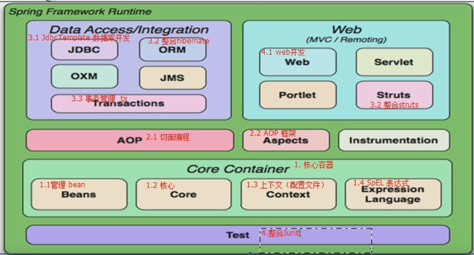
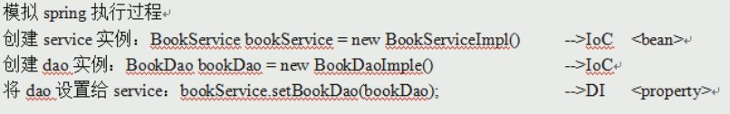
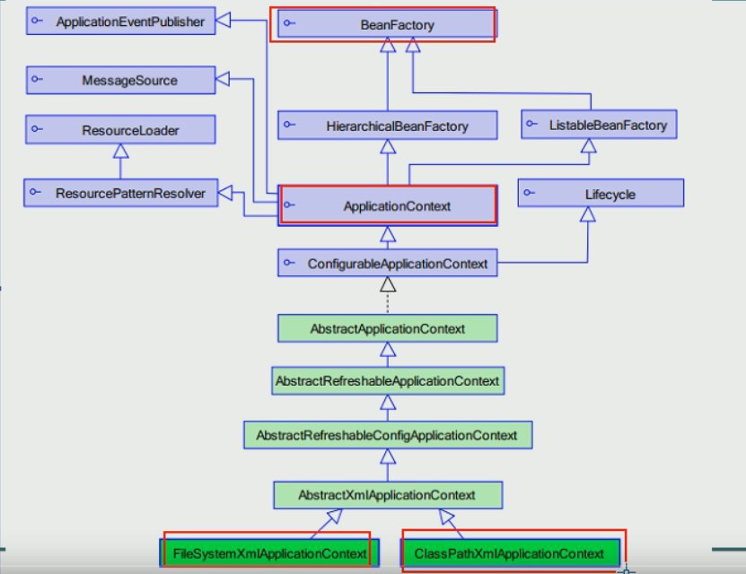
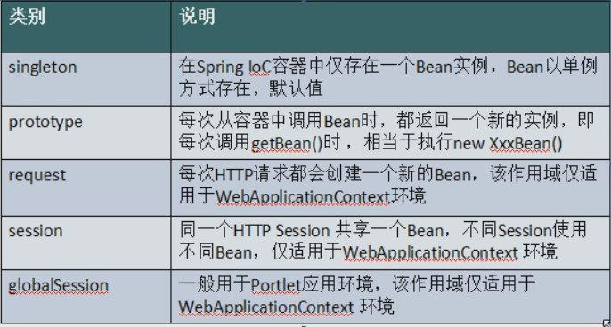

Spring 框架¶
Spring 概述¶
- Spring核心：控制反转(IoC)和面向切面(AOP)
优点¶
- 方便对象之间的耦合，简化开发
- 自动创建和维护所有对象（Bean）
Spring 体系结构¶

核心容器：¶
- Beans 对象
- core 核心
- centext 配置文件
- expression SpEl表达式
IoC(控制反转)¶
将类扔到Spring容器里面，创建新对象再拿出来
-
Spring容器 ：
applicationContext 配置文件 -
配置
- id ： 引用的时候用的名称
- class : 装载的类名称
-
从容器取出类：
-
首先得到目标容器
1
ApplicationContext testContext = new ClassPathXmlApplicationContext(beansxmlPath);
-
再从容器中取出类赋予对象（需要强转）
1
UserService test2 = (UserService) testContext.getBean("UserServiceID");
和将类扔到字典(dict)里差不多
1.导入4+1 jar包¶
- 4个核心容器 +1个依赖（commons-logging…jar)
spring-beans-vision.RELEASE.jar
spring-context-vision.RELEASE.jar
spring-core-vision.RELEASE.jar
spring-expression-vision.RELEASE.jar
commons-logging-vision.jar
在IDEA中创建Spring项目后自动导入
2.目标类¶
-
提供UserService接口和实现类
-
获得UserService实例
之前直接new一个对象
Spring中将由Spring创建对象实例 即IOC控制反转
创建对象实例的工作交给Spring
需要实例对象时直接从Spring拿
1 2 3 | public interface UserService {//虚类 public void addUser(); } |
1 2 3 4 5 6 | public class UserServiceImpl implements UserService {//写出实现类 @Override public void addUser(){ System.out.println("a_ioc add user"); } } |
3.配置文件¶
-
位置：任意，一般于src下
-
名称：任意，常用
applicationContext.xml -
内容：schema 约束
1 2 3 4 5 6 7 8 9 10 11 12 13 14 15 | <?xml version="1.0" encoding="UTF-8"?> <beans xmlns="http://www.springframework.org/schema/beans" xmlns:xsi="http://www.w3.org/2001/XMLSchema-instance" xsi:schemaLocation="http://www.springframework.org/schema/beans http://www.springframework.org/schema/beans/spring-beans.xsd"> <!--这个就是传说中的schema约束--> <!--配置service <bean> 配置需要创建的对象 id: 用于从Spring容器获得实例用的 class: 需要创建实例的全限定类名 ？？？？ --> <!--将实现类放到容器中,一般起名为UserServiceID--> <bean id="UserServiceID" class="com.itheima.a_ioc.UserServiceImpl"></bean> </beans> |
4.测试¶
1 2 3 4 5 6 7 8 9 10 11 12 13 14 15 16 17 | public class TestIOC { @Test //声明测试，则不需要写main public void demo01(){ //之前获取实例 UserService test1 = new UserServiceImpl(); test1.addUser(); //Spring方法 //1获得容器 String beansxmlPath = "com/itheima/a_ioc/beans.xml"; ApplicationContext testContext = new ClassPathXmlApplicationContext(beansxmlPath); //2创建实例 UserService test2 = (UserService) testContext.getBean("UserServiceID"); //从容器中获取实例，需要强转 test2.addUser(); } } |
DI(依赖注入)¶
-
依赖
-
is a: 继承 子类继承父类，子类就是父类
-
has a: 依赖 B的成员变量中有A -> B依赖A
- 既一个对象需要使用另一个对象
1 2 3
class B_class{ private A_class a;//B依赖A }
-
注入：通过 setter 方法进行依赖对象实例的设置
1 2 3 4 5 6 7 | class BookServiceImpl{ //之前开发 接口 = 实现类 private BookDao bookDao = new BookDaoImpl(); //Spring开发 private BookDao; setter方法注入BookDao } |

1.目标类¶
- Dao
1 2 3 4 5 6 | public class BookDaoImpl implements BookDao { @Override public void addBook() { System.out.println("di add book"); } } |
- Service
1 2 3 4 5 6 7 8 9 10 11 12 13 14 15 16 | public class BookServiceImpl implements BookService { //1 原方法 接口 = 实现类 private BookDao bookDao1 = new BookDaoImpl(); //2 Spring方法 接口+setter方法 private BookDao bookDao2; public void setBookDao2(BookDao bookDao2) {//setter方法 this.bookDao2 = bookDao2; } @Override public void addBook() { this.bookDao1.addBook(); this.bookDao2.addBook(); } } |
- 原方法中 bookDao1与类是绑定的关系
- Spring方法中 通过Setter() 可以改变绑定的bookDao2
2.配置文件¶
1 2 3 4 5 6 7 8 9 10 11 12 13 14 15 16 17 18 19 20 | <?xml version="1.0" encoding="UTF-8"?> <beans xmlns="http://www.springframework.org/schema/beans" xmlns:xsi="http://www.w3.org/2001/XMLSchema-instance" xsi:schemaLocation="http://www.springframework.org/schema/beans http://www.springframework.org/schema/beans/spring-beans.xsd"> <!-- 模拟Spring执行过程 创建service实例 ->Ioc <bean> 创建dao实例 ->Ioc 将dao注入service （setter()） ->DI <property> <property> 用于属性注入 name:bean的属性名， 通过setter获得 ref: 依赖的id值 --> <bean id="BookServiceID" class="com.itheima.b_di.BookServiceImpl"> <property name="bookDao2" ref="BookDaoID"></property> </bean> <bean id="BookDaoID" class="com.itheima.b_di.BookDaoImpl"></bean> </beans> |
3.测试¶
1 2 3 4 5 6 7 8 | public class TestDI { @Test //声明测试，则不需要写main？？？ public void demo00(){ ApplicationContext testContext = new ClassPathXmlApplicationContext("com/itheima/b_di/beans.xml"); BookService test1 = (BookService) testContext.getBean("BookServiceID"); test1.addBook(); } } |
核心API¶

-
BeanFactory ：生成任意的bean ，采用延迟加载，只有在第一次getBean的时候才会实例化Bean¶
-
ApplicationContext ：BeanFactory的子接口，功能更强（强大就完事了），当配置文件被加载就对象实例化¶
-
ClassPathXmlApplicationContext 用于加载classpath(src)下的指定的xml
- xml运行时位置 –> /WEB-INF/classes/…xml
-
FileSystemXmlApplicationContext 用于加载指定盘符路径下的xml
- xml运行时位置 –> /WEB-INF/…xml
- 通过java web -> ServletContext.getRealPath() 获得盘符路径
-
getBean :获取实例
1 2 3 4
//获取后强制转换 UserService test2 = (UserService) testContext.getBean("UserServiceID"); //提前告知类型 UserService test2 = testContext.getBean("UserServiceID",UserService.class);
装配Bean基于XML¶
1.实例化方式¶
- 默认构造
1 | <bean id="" class=""></bean> |
-
静态工厂
-
常用于Spring整合其他框架
- 用于生产实例对象，所有方法必须是static
- 将其他框架的东西交给Spring，将会具有Bean的所有特性
-
搭建静态工厂：
1 2 3 4 5
public class TestBeanFactory { public static UserService createService(){ //创建实例的静态方法 return new UserServiceImpl(); } }
1 | <bean id="" class=工厂的全限定类名（包名+类名） factry-method=静态方法></bean> |
-
实例工厂
-
必须先有工厂的实例对象，然后通过实例对象去创建对象
- 所有的方法都是非静态的
-
工厂交给Spring
-
然后创建工厂实例并调用创建方法
1 2 3 4 5 6
<!--创建实例工厂--> <bean id="TestFactoryID" class="com.itheima.c_inject.c_factory.TestFactory"></bean> <!--获得UserService 创建实例工厂并调用创建对象方法 --> <bean id="UserServiceID" factory-bean="TestFactoryID" factory-method="createService"></bean>
2.Bean的种类¶
- 普通Bean
1 | <bean id="" class=""></bean> |
-
FactoryBean : 具有工厂生产对象的能力，只能生产特定的对象
-
必须使用Factory接口，提供方法getObject() 用于提供特定的bean
- AOP使用
3.作用域¶
